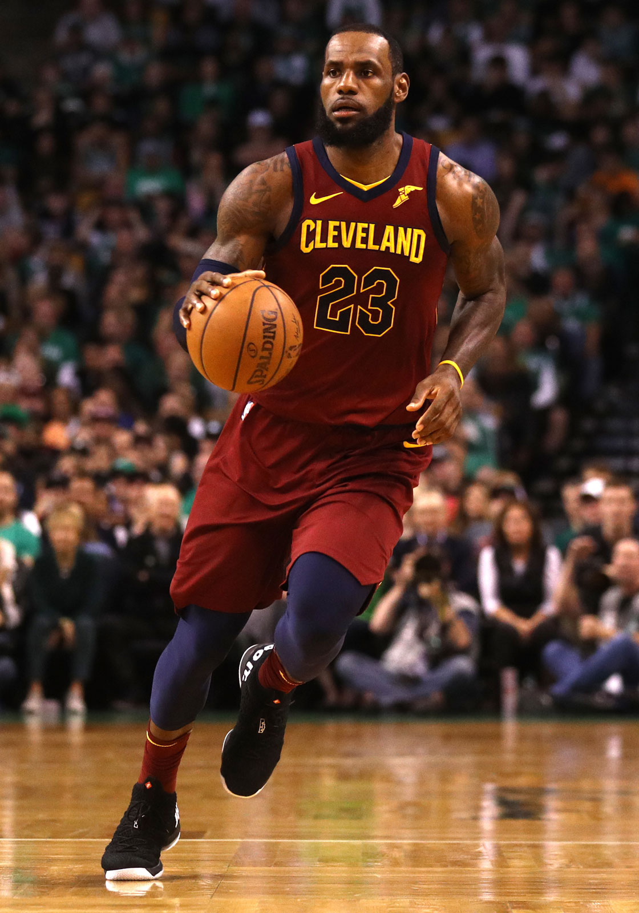
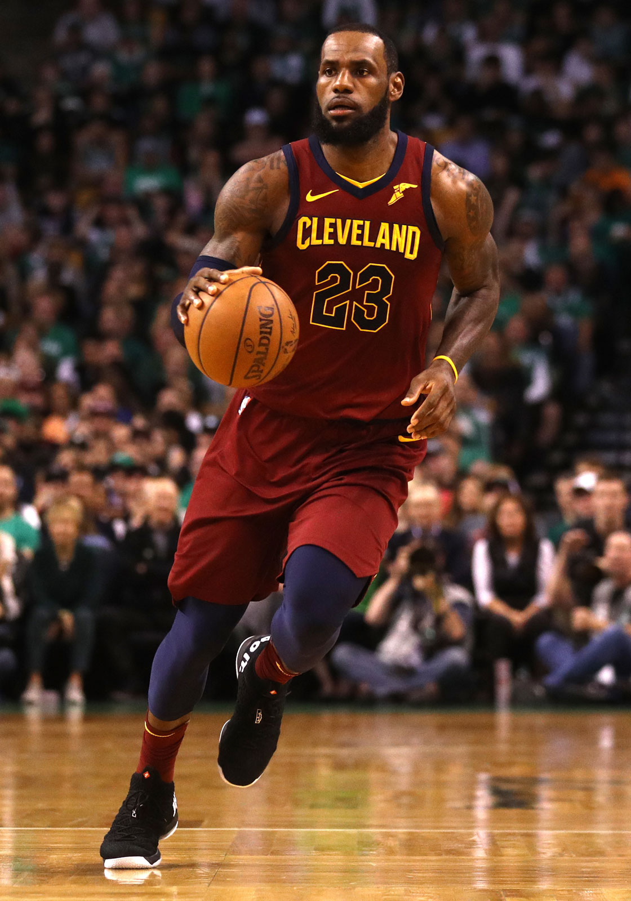

LeBron James
Born in Akron, Ohio
For more NBA statistics, please use the button below to access LeBron James' stats
LeBron Raymone James Sr., born December 30, 1984, is an American professional basketball player for the Los Angeles Lakers of the National Basketball Association (NBA). Often compared to Michael Jordan for the title of the greatest basketball player of all time, his accomplishments include three NBA championships, four NBA Most Valuable Player Awards, three NBA Finals MVP Awards, and two Olympic gold medals. James has appeared in fifteen NBA All-Star Games and been named NBA All-Star MVP three times. He is the all-time NBA playoffs scoring leader, is fourth in all-time NBA points scored, and is eighth in all-time NBA assists. He has been voted onto the All-NBA First Team twelve times and the All-Defensive First Team five times.
James played basketball for St. Vincent–St. Mary High School in his hometown of Akron, Ohio, where he was heavily touted by the national media as a future NBA superstar. A prep-to-pro, he joined the Cleveland Cavaliers in 2003 as the first overall draft pick. Named the 2003–04 NBA Rookie of the Year, he soon established himself as one of the league's premier players; he won the NBA Most Valuable Player Award in 2009 and 2010. After failing to win a championship with Cleveland, James left in 2010 to sign as a free agent with the Miami Heat. This move was announced in an ESPN special titled The Decision, and is one of the most controversial free agent decisions in American sports history.
James won his first two NBA championships while playing for the Miami Heat in 2012 and 2013; in both of these years, he also earned league MVP and Finals MVP. After his fourth season with the Heat in 2014, James opted out of his contract to re-sign with the Cavaliers. In 2016, he led the Cavaliers to victory over the Golden State Warriors in the NBA Finals, delivering the franchise's first championship and ending Cleveland's 52-year professional sports title drought. His teams appeared in the NBA Finals in eight consecutive seasons (from 2011 to 2018). In 2018, James opted out of his contract with the Cavaliers to sign with the Lakers.
Off the court, James has accumulated additional wealth and fame from numerous endorsement contracts. His public life has been the subject of much scrutiny, and he has been ranked as one of America's most influential and popular athletes. He has been featured in books, documentaries, and television commercials. He has also hosted the ESPY Awards and Saturday Night Live, and appeared in the 2015 film Trainwreck.
| Career Average Points | Career Average Assists | Career Average Rebounds |
| 27.1 | 7.3 | 7.4 |
As sourced by Wikipedia and Basketball Reference.
 
